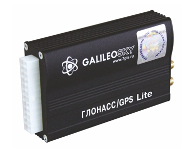
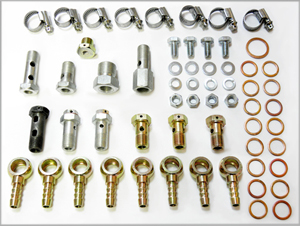
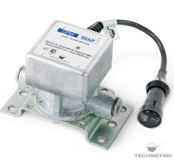
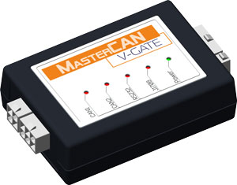
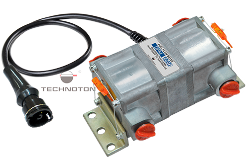
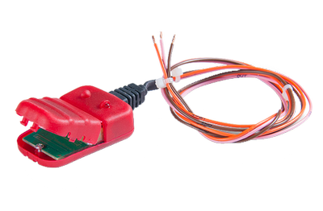
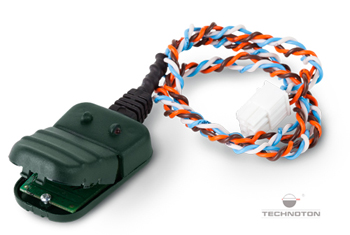
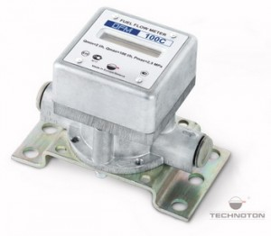

Продукция компании «Технотон Трейд»

Galileo Sky - прибор для навигации, подключаемый к сети автомобиля.

Монтажный комплект - используется при установке датчиков расхода топлива.

DUT-E GSM - датчик уровня топлива, устанавливается в бак автомобиля.

DFM 90 AP - датчик расхода топлива, используется только с блоком для навигации.

Master CAN V-GATE - подключается к CAN шине автомобиля и считывает с него информацию.

DFM 250D - дифференциальный датчик расхода топлива, высчитывает разницу потоков в топливной
системе.

NozzleCrocodile - применяется для контроля расхода бензина и газа, потребляемого двигателем.

CANCrocodile - считывает данные о работе автомобиля без вмешательства в целостность электронных
систем.

DFM 100C - автономный датчик расхода топлива, отображает информацию на ЖКИ экране.